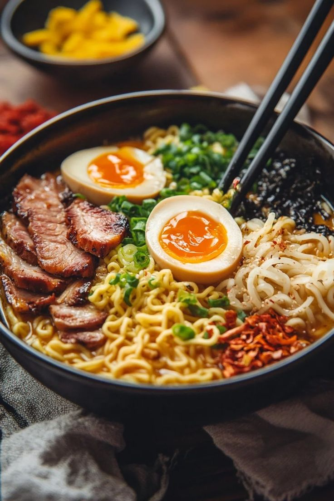

Ramen!
Yes, We'll never miss this dish

Ramen is a noodle soup with broth and toppings like meat and eggs
It’s warm, salty, and very filling.
Ingredients
- Ramen noodles (our classic Maruchan package is all we need, sans the flavor packet!)
- Garlic and ginger
- Broth (chicken or veg)
- Dried shiitake mushrooms
- Veggies like carrots or kale
- All your favorite toppings like some panko, egg, chili oil, etc.
Now! let's see how to make it a perfect Dish
Steps
- Stir-Fry The Aromatics: Garlic and ginger, what a delicious duo. This is where the flavor is, friends.
- Make Your (Easy!) Broth: Add some chicken broth and dried shiitake mushrooms for some umami punch.
- Cook your noodles right in the broth with some scallions
- Add whatever you’d like! Cook until just tender.
- Add some crunchy panko crumbs, a soft-boiled egg, chili oil, hot sauce, sesame oil, and/or soy sauce, whatever your heart desires.
Home